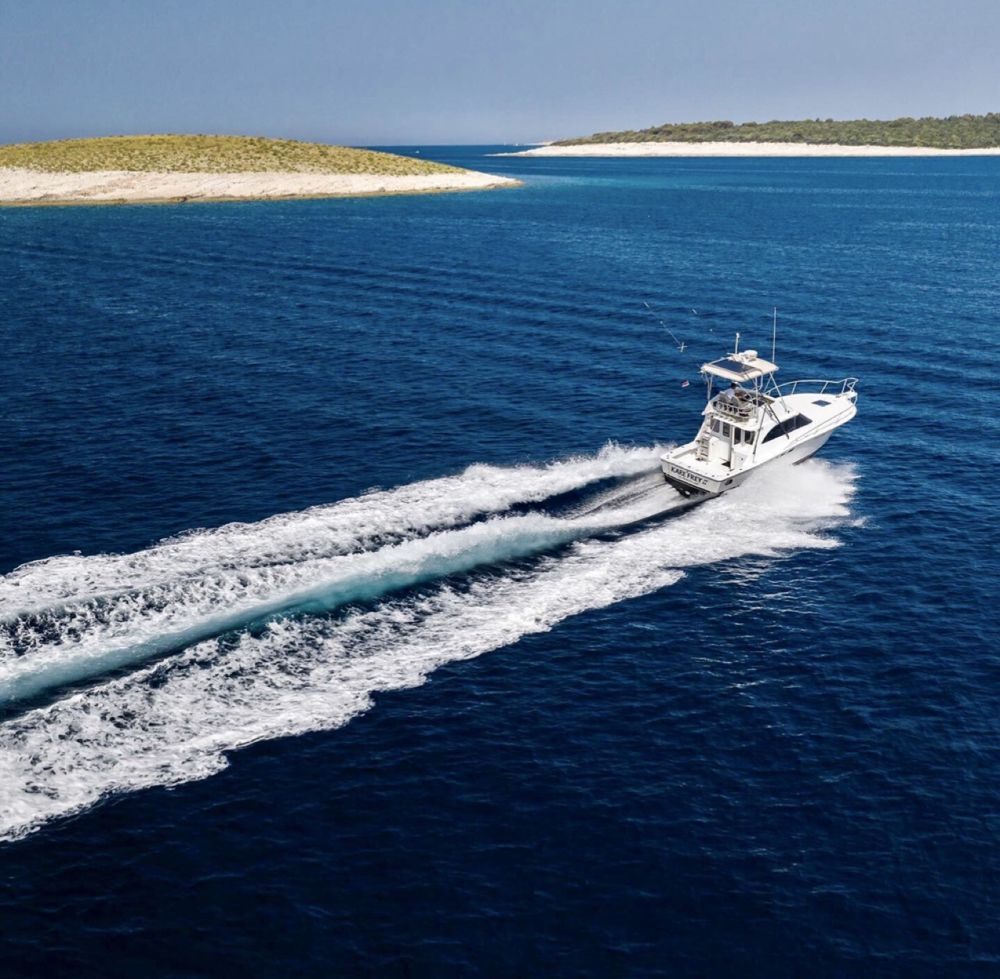
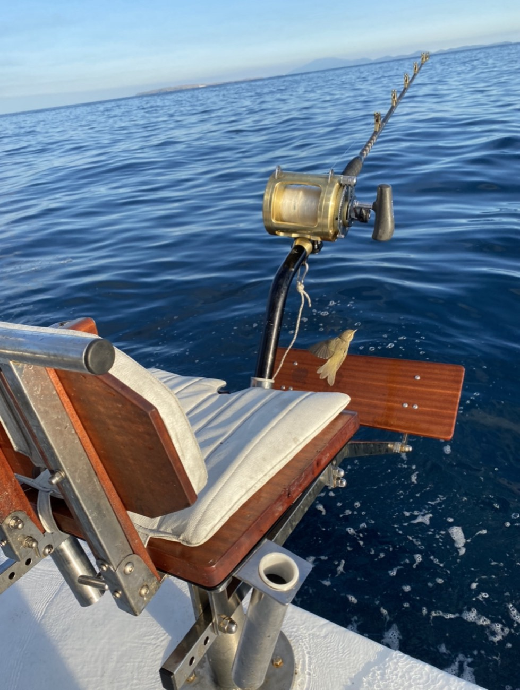
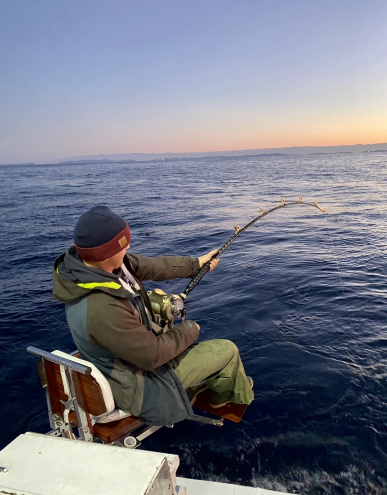
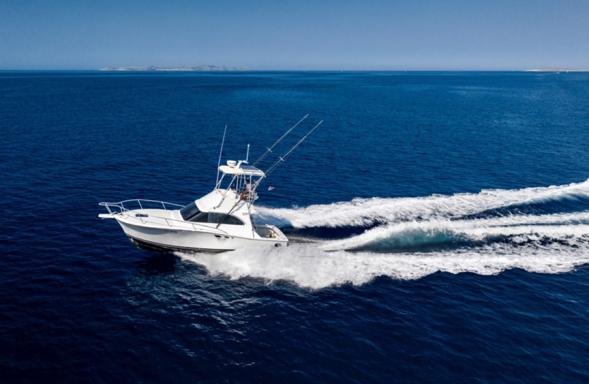
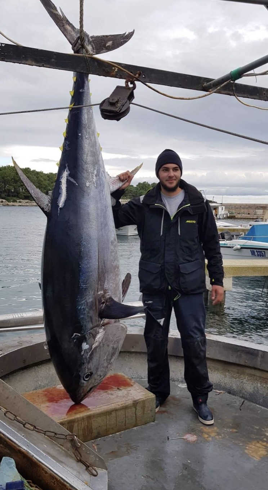
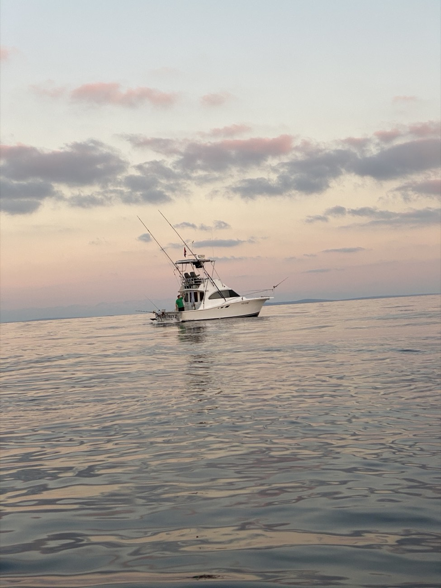
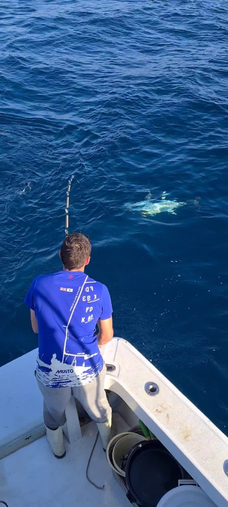
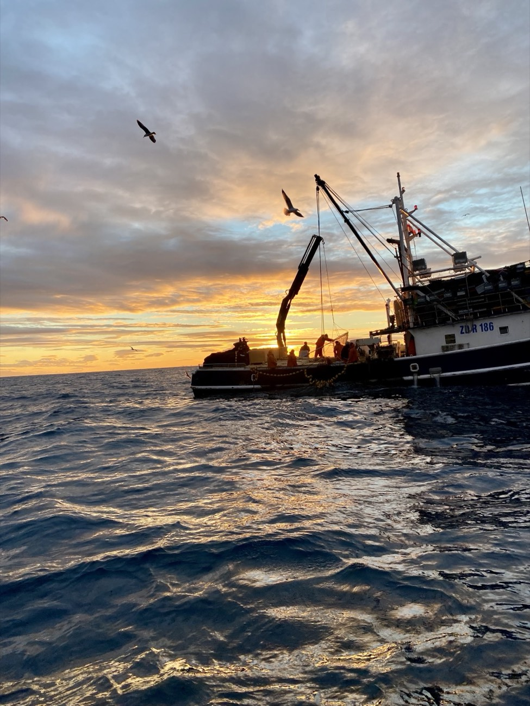
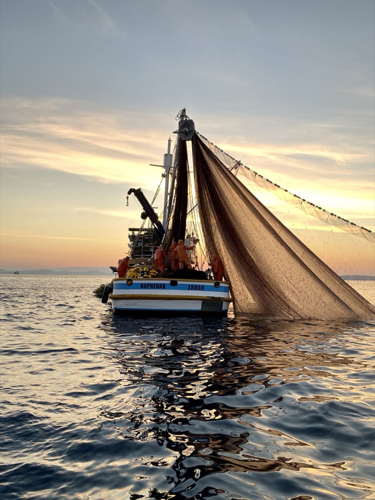
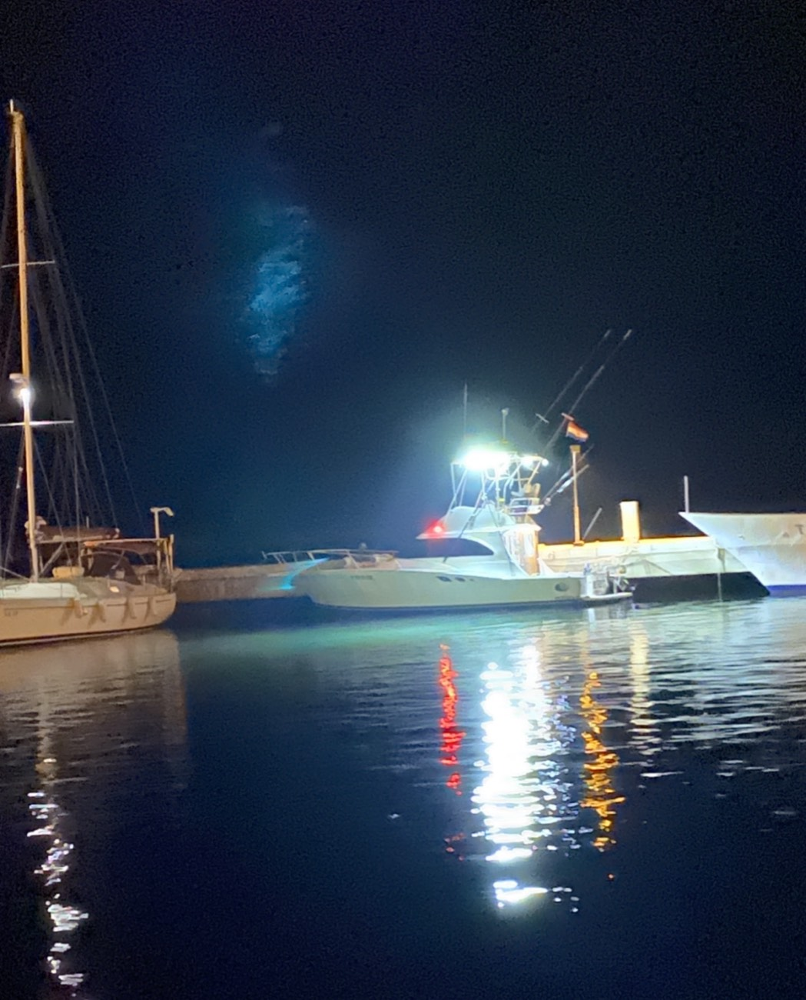

Big game ribolov
- 12 sati
- polazak u 10:00
- dijelite brod s drugim ribolovcima
350 €po osobi
Big game ribolov i ribolov na olupinama s kapetanom Romanom Robertom Franulovićem. Isplovljavamo iz Malog Lošinja na 32-stopnom Luhrsu s ribolovnom stolicom, outriggerima i živim mamcem – vi donosite samo dobru volju i fotoaparat.

Pridružite se zajedničkoj turi i platite po osobi ili unajmite cijeli brod za svoje društvo do osam osoba. Sve o turama i brodu →
Ribe koje lovimo: Plava tuna, plavi marlin, wahoo, gof, kirnja, škrpina, jastog i plava psina.
Cijene prema ponudi kapetana na FishingBookeru (studeni 2026.). Za točan termin i sezonu nazovite 099 454 4279.



Američki sportski ribolovni brod obnovljen 2023. godine, s flybridgeom, ribolovnom stolicom i bazenom za živi mamac.
Fotografije koje je kapetan objavio na Google profilu Fishing Losinja.







Iz 11 recenzija na Google profilu. Izdvojili smo nekoliko, skraćeno i prevedeno s engleskog gdje je potrebno.
Jedan od najboljih kapetana s kojima sam ikad izašao na more, a bilo je više od 50 izleta. Brod drži čistim, pusti odličnu glazbu za vožnju i jednostavno znate da ste u dobrim rukama.
Izvanredno iskustvo. Preporuka. Opremljeni brodovi i iskusan kapetan.
Dobar skiper i puno bolji ribar.
Kad nazovete, javi se vrlo ljubazan čovjek koji ima izravan odgovor na sva vaša pitanja.
Lijepo sam se proveo s prijateljima i stvarno uživao. Vrlo profesionalni.
Štapovi, role i pribor, živi mamac, ribolovna dozvola, pomoćnik na palubi (first mate), grickalice, piće i ručak te čišćenje i filetiranje ulova.
Ne. Dozvola je uključena u cijenu ture.
Da, ulov je vaš. Moguće je i pustiti ribu natrag (catch & release), a neke vrste se prema propisima moraju pustiti.
Da. Preuzimanje s hotela ili mola u Malom Lošinju uključeno je u cijenu – dogovorite mjesto pri rezervaciji.
Mogu. Pri rezervaciji pitajte za prsluke za spašavanje dječje veličine.
Alkohol je dopušten umjereno, ali bez žestokih pića i staklenih boca. Grickalice možete ponijeti.
Nazovite 099 454 4279. Telefonom najbrže dobijete izravan odgovor o turi i terminu, a razgovara se i na engleskom.
Najbrže je nazvati i odmah dogovoriti termin, polazak i mjesto preuzimanja.